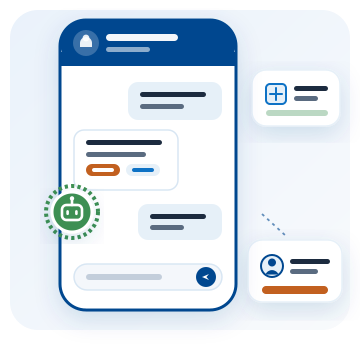

Tu WhatsApp contestado,
también cuando cierras
Un asistente que responde con los datos de tu negocio y le pasa la conversación a tu equipo cuando el cliente pide hablar con alguien.

Contesta con lo tuyo, no con frases genéricas
La mayoría de los mensajes que recibe un negocio son las mismas cinco preguntas: a qué hora abren, dónde quedan, cuánto cuesta, si hay envío y cómo se paga. El asistente las contesta con lo que tú cargaste una sola vez, y deja para tu equipo las conversaciones que de verdad necesitan una persona.
Dos cosas antes de empezar. El asistente necesita un número de teléfono dedicado: uno conectado a la API de WhatsApp de Meta deja de funcionar en la aplicación normal, así que no conviene usar el que llevas en el bolsillo. Y las conversaciones de WhatsApp las cobra Meta directamente a tu negocio, con una tarjeta que registras en tu propia cuenta: es un costo aparte de lo que pagas por el asistente. Nosotros nos encargamos de la conexión y te acompañamos en los dos pasos.
Qué hace el asistente
- Responde por WhatsApp todos los días, a cualquier hora
- Contesta horarios, ubicación, formas de pago y envíos con los datos de tu negocio
- Dice precios y disponibilidad tomándolos de tu catálogo, sin inventar ninguno
- Ofrece un menú de opciones que tú escribes y ordenas
- Pasa la conversación a una persona de tu equipo cuando el cliente lo pide
- Deja marcada la conversación cuando nadie pudo atender el pedido
- Guarda todas las conversaciones en una bandeja que puedes leer y responder a mano
- No se sale del tema de tu negocio, por más que le pregunten
- Se configura desde el sistema, sin programar y sin depender de nosotros
Cómo funciona
Cuatro pasos, y solo el segundo lo haces tú.
1. Conectamos tu número
Nos ocupamos del trámite con Meta y de dejar el número respondiendo.
2. Cargas tus datos
Horarios, dirección, pagos, envíos y los productos que quieres que ofrezca.
3. Empieza a contestar
Desde el primer mensaje, con tu información y sin frases prestadas.
4. Tu equipo entra
Cuando el cliente pide una persona, el hilo llega al asesor de turno.
Por qué no es un chatbot cualquiera
No inventa precios
Si un precio no está en tu catálogo, el asistente no lo dice. Prefiere no responder antes que darle a tu cliente un número equivocado.
Escribe, no repite
Redacta cada respuesta con tus datos en vez de pegar un texto fijo, así que contesta lo que le preguntaron y no lo más parecido.
Sabe cuándo salirse
Cuando el cliente pide una persona, avisa al asesor de turno; y si nadie pudo atenderlo, la conversación queda marcada para que no se pierda.
Lo manejas tú
Cambias horarios, precios, productos y respuestas desde el sistema, cuando quieras, sin pedirle nada a nadie.
Planes de atención inteligente
Elige según cuántos mensajes envías al mes. Todos incluyen el asistente completo, la bandeja de conversaciones y el pase a una persona: lo que cambia es hasta cuánto te atendemos.
Solo se cuentan los mensajes que salen. Lo que te escriben tus clientes no consume nada, y seguir recibiendo nunca se corta.
El precio es el del asistente. Las conversaciones de WhatsApp las factura Meta aparte, a la tarjeta de tu negocio.
Bot Inicio
Para probar el asistente en tu negocio
$9,99 /mes
Hasta 200 mensajes al mes
- 4 temas que el asistente contesta
- Hasta 10 productos en el catálogo
- Datos del negocio: horarios, ubicación, pagos y envíos
- Bandeja de conversaciones
- Pase a una persona
- Volumen pensado para probarlo: a este ritmo todavía puedes responder tú
Bot Emprende
Para negocios con consultas todos los días
$39,99 /mes
Hasta 1.000 mensajes al mes
- Todo lo del plan Inicio
- 6 temas que el asistente contesta
- Hasta 15 productos en el catálogo
- Asesores con turnos para el pase a una persona
- Multiusuario para tu equipo
- Soporte por WhatsApp
Bot Negocio
Para quien ya vende por WhatsApp y no quiere perder mensajes
$69,99 /mes
Hasta 1.650 mensajes al mes
- Todo lo del plan Emprende
- 10 temas que el asistente contesta
- Hasta 25 productos en el catálogo
- Bandeja compartida con avisos de quien espera a una persona
- Acompañamiento en la configuración inicial
- Soporte prioritario
Bot Pro
Para alto volumen de conversaciones
$129,99 /mes
Hasta 2.900 mensajes al mes
- Todo lo del plan Negocio
- 15 temas que el asistente contesta
- Hasta 35 productos en el catálogo
- Configuración inicial hecha con tu equipo
- Revisión de las respuestas del asistente
- Atención preferencial
¿No sabes cuántos mensajes envías? Escríbenos y lo estimamos juntos mirando tu WhatsApp de un mes normal. Puedes empezar por un plan y cambiarlo después.
Preguntas frecuentes sobre el asistente de WhatsApp
¿Qué necesito para usar el asistente de WhatsApp?
Un número de teléfono dedicado al asistente. Un número conectado a la API de WhatsApp de Meta deja de funcionar en la aplicación normal de WhatsApp, así que conviene usar uno distinto al que llevas en el bolsillo. Nosotros nos encargamos de la conexión con Meta.
¿El asistente inventa precios o respuestas?
No. Los precios y los productos salen del catálogo que tú cargas, y si le preguntan algo que no tiene que ver con tu negocio, no lo contesta.
¿Qué pasa cuando un cliente quiere hablar con una persona?
El asistente avisa por WhatsApp al asesor de turno y le deja el hilo. Si nadie puede atenderlo en ese momento, la conversación queda marcada en la bandeja para que tu equipo la vea y nadie se quede sin respuesta.
¿El precio del plan incluye lo que cobra WhatsApp?
No. Lo que pagas a SysDevUp es el asistente: la inteligencia que responde, la bandeja, el catálogo y el pase a una persona. Las conversaciones las factura Meta directamente a tu negocio, con una tarjeta que registras en tu propia cuenta de WhatsApp Business. No revendemos ese consumo ni le agregamos margen: ves exactamente lo que Meta te cobra.
¿Cómo se cuentan los mensajes del plan?
Solo se cuentan los mensajes que salen, los conteste el asistente o una persona de tu equipo. Lo que te escriben tus clientes no consume nada, y seguir recibiendo mensajes nunca se corta, aunque se termine el cupo del mes.
¿Puedo responder yo mismo desde el sistema?
Sí. Tienes una bandeja con todas las conversaciones, y cuando tomas una el asistente deja de responder en ese hilo hasta que se lo devuelves.
¿Sirve para enviar promociones a toda mi lista de clientes?
No. El asistente responde a quien te escribe; no es una herramienta de envíos masivos ni de campañas.
¿Puedo contratarlo junto con la facturación electrónica?
Sí. Son servicios separados con su propio plan: puedes contratar solo la atención por WhatsApp, solo la facturación electrónica, o los dos en la misma cuenta.
¿Puedo cambiar lo que responde el asistente?
Sí, desde el sistema y sin programar. Tú escribes los datos de tu negocio, eliges qué productos puede ofrecer, decides qué temas contesta y cómo se presenta.
¿Vemos cómo contestaría en tu negocio?
Cuéntanos qué te preguntan tus clientes todos los días y te mostramos cómo quedaría el asistente respondiéndolo.